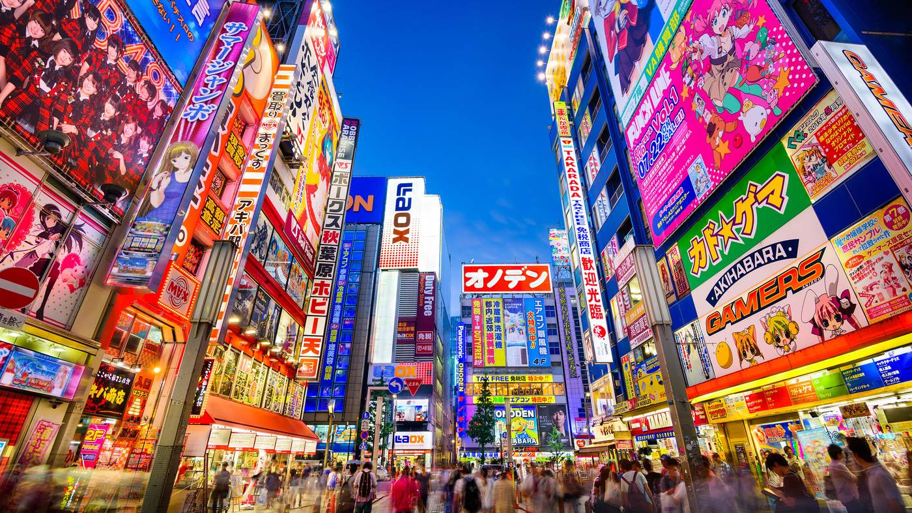

TOKYO
Le voyage de mes reves est Tokyo.
Tokyo (東京, Tōkyō) est la capitale administrative du Japon et constitue le principal centre politique de l'archipel depuis le xviie siècle. La préfecture de Tokyo (東京都) forme l'une des 47 préfectures du Japon. Elle compte un peu plus de 13 millions d'habitants et s'étend sur 2 187 km2. L'agglomération de Tokyo forme avec 35 millions d'habitants l'aire urbaine la plus peuplée au monde. La ville est par ailleurs un important centre économique mondial, et accueille de nombres universités et centres de recherche, ainsi que de nombreuses installations culturelles.
Tokyo (東京, Tōkyō) est la capitale administrative du Japon et constitue le principal centre politique de l'archipel depuis le xviie siècle. La préfecture de Tokyo (東京都) forme l'une des 47 préfectures du Japon. Elle compte un peu plus de 13 millions d'habitants et s'étend sur 2 187 km2. L'agglomération de Tokyo forme avec 35 millions d'habitants l'aire urbaine la plus peuplée au monde. La ville est par ailleurs un important centre économique mondial, et accueille de nombres universités et centres de recherche, ainsi que de nombreuses installations culturelles.
Endroit incontournable de Tokyo
